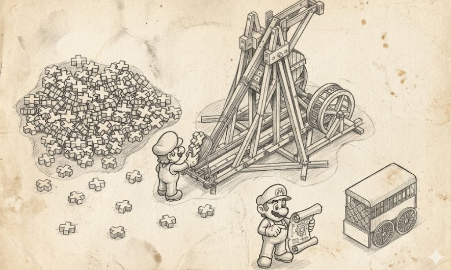

C++101 — каталог идиом и приёмов C++ в четырёх частях: Ч.1 · Ч.2 · Ч.3 · Ч.4

Про C++ часто шутят, что любую вещь можно сделать пятью разными путями, четыре из которых компилируются, три работают, а два правильные, но один зависит от фазы луны. Часто такие шутки и идиомы откладываются в коллективной памяти сообщества какой именно из этих путей правильный в каждой конкретной ситуации.
Большинство этих примеров родилось в эпоху до C++11, когда у языка ещё не было ни умных указателей в стандарте, ни move-семантики, ни constexpr, ни концептов, и приходилось руками собирать из шаблонов и перегрузок некоторые конструкции, которые в более поздних стандартах язык даёт почти бесплатно. Многие идиомы, примеры и идеи стоит читать в двух смыслах сразу, как исторический артефакт, объясняющий «почему старый код выглядит вот так», и как живой приём, который всё ещё применяется в движках и играх.
Разработка игр тут не случайно, потому что игровой движок это обычно место, где абстракции встречаются с профилировщиком, и проигрывают ему чаще, чем хотелось бы. А легаси паттерны цветут и пахнут из-за чьих-то забытых в углу костылей, но большинство вещей вполне правильны, применяются и спасают от ошибок. Многое из этого спрашивают если не дословно, то хотя в паре слов, хорошие лиды на собесе, перед тем как позвать вас в команду, и просто взяв рандомо 5-6 пунктов можно составить впечатление, сталкивался ли новый человек с определенными проблемами.
Когда я собирал оглавление Game++, раздел про идиомы, идеи, паттерны и механизмы C++ планировался шестым и завершающим, и должен был занять страниц сто, по одной на каждый пункт, но чем дальше я собирал материал, тем яснее становилось, что каждая секция тянет за собой историю, а каждая история требует контекста, а каждый контекст в игрострое никогда не бывает простым. В итоге текст разросся до размеров, при которых он просто сломал бы структуру книги, и мне пришлось выбирать между «урезать до неузнаваемости» и «отпустить жить отдельно». Пришлось выбрать второе.
Перед вами то, что могло бы стать половиной Game++, но стало самостоятельным материалом. Здесь собраны идиомы, идеи, паттерны и механизмы C++, которые сложились в сообществе за несколько десятилетий и продолжают жить в кодовых базах игровых движков, иногда под своими именами, иногда под другими, иногда вообще без имён, потому что их давно перестали объяснять. У большинства имена все же есть, есть и история с ответом почему именно так, а не иначе.
Вероятно вам потребуется вспомнить некоторые правила вывода шаблонов, и что такое конструктор и деструктор, чем стек отличается от кучи, что у объекта есть время жизни, но это не точно. Я также намеренно убрал обработку краевых случаев и разные проверки из кода, которые в реальном коде заняли бы половину всего текста и утопили бы саму мысль в деталях. Паттерн механизма в моем случае важнее конкретной реализации, и почти каждая из них существует в десятке вариаций под разные компиляторы и стандарты.
Оглавление — все идиомы серии
- RAII (Resource Acquisition Is Initialization)
- Scope Guard
- Resource Return
- Copy-and-swap
- Non-throwing swap
- Smart Pointer
- Checked delete
- Intrusive reference counting
- Copy-on-write
- Thread-safe Copy-on-write
- Free Function Allocators
- Pimpl (Handle Body, Compilation Firewall, Cheshire Cat)
- Fast Pimpl
- Interface Class
- Concrete Data Type
- Final Class
- Include Guard Macro
- Inline Guard Macro
- Export Guard Macro
- Curiously Recurring Template Pattern (CRTP)
- Barton-Nackman trick
- Empty Base Optimization (EBO)
- Non-copyable Mixin
- Parameterized Base Class
- Metafunction
- Traits
- Tag Dispatching
- Int-To-Type (Integer-to-Type Map)
- Type Selection
- SFINAE (Substitution Failure Is Not An Error)
- enable-if
- Member Detector
- Policy-based Design
- Policy Clone (Metafunction wrapper)
- Type Erasure
- Type Generator (Templated Typedef)
- Thin Template
- Named Template Parameters
- Coercion by Member Template
- Shortening Long Template Names
- Expression-template
- The result_of technique
- Exploding Return Type
- Return Type Resolver
- Named Constructor
- Virtual Constructor
- Computational Constructor
- Construct On First Use
- Nifty Counter
- Runtime Static Initialization Order
- Base-from-Member
- Calling Virtuals During Initialization
- Construction Tracker
- Attach by Initialization
- Non-Virtual Interface (NVI)
- Thread-Safe Interface
- Acyclic Visitor Pattern (cложно)
- Capability Query
- Covariant Return Types
- Virtual Friend Function
- Fake Vtable
- Algebraic Hierarchy
- Polymorphic Exception
- Polymorphic Value Types
- Hierarchy Generation
- Function Object (Functor)
- Object Generator
- Object Template
- Iterator Pair
- Generic Container
- Erase-Remove
- Clear-and-minimize
- Shrink-to-fit
- Safe bool
- Type Safe Enum
- Attorney-Client
- Making New Friends (сложно)
- Non-member Non-friend Function (сложно)
- Small Object Optimization (SOO/SSO)
- Prohibiting Heap-based Objects
- Storage Class Tracker
- Execute-Around Pointer
- Temporary Proxy
- Address Of
- nullptr
- Move Constructor
- Implicit conversions
- Recursive Type Composition (сложно)
- Temporary Base Class
- Boost mutant
- Multi-statement Macro
- Named Loop
- Named Parameter
- Named External Argument
- Deprecate and Delete
- Function Poisoning
- Inner Class
- Rule of Zero/Three/Five
- Most Vexing Parse
- Pass-key
- Defaulted Comparisons и оператор <=> (Spaceship)
RAII (Resource Acquisition Is Initialization)
RAII, пожалуй, самая фундаментальная идиома C++, и одновременно хуже всех осознаваемая новичками, потому что её не видно. Идея в том, что захват любого ресурса (памяти, файла, мьютекса, дескриптора текстуры, GPU-фенса) привязывается к конструктору объекта, а освобождение, что логично, к деструктору. Дальше язык сам гарантирует, что когда объект покидает область видимости, деструктор будет вызван, как бы вы оттуда ни вышли, через нормальным return, с исключением посреди функции или break из середины цикла.
Главная ценность тут не в том, что вы не забудете написать free или unlock, хотя и в этом тоже, а что освобождение становится корректным при исключениях. Без RAII любой throw между захватом и ручным освобождением будет утечкой, и в коде, который кидает исключения из десятка мест, отследить все пути выхода вручную физически сложно, так что RAII перекладывает всю эту бухгалтерию на компилятор, который раскручивает стек и зовёт деструкторы в строго обратном порядке конструирования.
Подводный камень в том, что RAII работает ровно настолько хорошо, насколько корректно написан деструктор, и кидать исключения из деструктора в C++ это все равно билет в один конец к станцииstd::terminate. Поэтому RAII-обёртки обязаны освобождать ресурс без права на ошибку, а вся логика, которая может упасть, должна жить в обычных методах.
Термин ввёл Бьёрни Страуструп ещё на заре языка, изначально думая в основном про память и время жизни, и название получилось, по его же признанию, не самым удачным, потому что «захват ресурса есть инициализация» подчёркивает половину идеи (захват в конструкторе) и совсем не подчёркивает вторую, гораздо более важную (освобождение в деструкторе).
Со временем появились более выразительные имена для частных случаев: Scoped Locking для мьютексов в работах Дугласа Шмидта или Execute-Around Object для обёрток, которые делают что-то на входе и что-то на выходе из области видимости.
class ScopedTextureBind {
public:
explicit ScopedTextureBind(GLuint texture) {
glBindTexture(GL_TEXTURE_2D, texture);
}
~ScopedTextureBind() {
glBindTexture(GL_TEXTURE_2D, 0); // освобождаем что бы ни случилось
}
ScopedTextureBind(const ScopedTextureBind&) = delete;
ScopedTextureBind& operator=(const ScopedTextureBind&) = delete;
};
void draw_hud() {
ScopedTextureBind bind(hud_atlas);
submit_quads(); // даже если тут вылетит исключение,
// текстура будет отвязана при выходе
}В играх RAII живёт буквально везде, но часто под другими именами. Любой ScopedTimer, который меряет, сколько занял кусок кадра, и пишет результат в профайлер в деструкторе тоже будет RAII. Любой RenderPassScope, открывающий render pass в конструкторе и закрывающий в деструкторе, тоже будет RAII. Командные буферы, привязки состояния GPU, блокировки на время доступа к стримингу ресурсов из фонового потока: всё это обёртки, которые гарантируют симметрию «открыл/закрыл» даже когда логика внутри кадра ветвится неисповедимой программерской мыслью.
Scope Guard
Это RAII, доведённый до логического олимпа, когда вместо того чтобы писать отдельный класс-обёртку под каждый ресурс, вы создаёте универсальный объект, которому в конструкторе передаёте произвольное действие (лямбду, функтор, указатель на функцию), и это действие выполняется в деструкторе. Получается «отложенный код», который гарантированно сработает при выходе из области видимости.
Есть возможность «обезвредить» guard вызовом чего-то вроде dismiss(), если операция в итоге прошла успешно и откатывать ничего не надо, что превращает Scope Guard в идеальный инструмент для транзакционной логики. Теперь можно делать шаг, ставить guard на его откат, делать следующий шаг, и если в конце всё хорошо, то снимать все guard-ы, а если посреди что-то упало, деструкторы откатят уже сделанные шаги в обратном порядке.
Идиому популяризировали Александреску и Маргинин в статьях начала 2000-х, и оттуда пошло название ScopeGuard. Позже Александреску переосмыслил её с учётом move-семантики и в C++11 представил SCOPE_EXIT/SCOPE_FAIL/SCOPE_SUCCESS как варианты, срабатывающие соответственно всегда, только при исключении и только при нормальном выходе. В современном виде это живёт в библиотеке folly от Facebook и просочилось в std::experimental::scope_exit.
template <class F>
class ScopeGuard {
F func_;
bool active_ = true;
public:
explicit ScopeGuard(F f) : func_(std::move(f)) {}
~ScopeGuard() { if (active_) func_(); }
void dismiss() { active_ = false; }
ScopeGuard(ScopeGuard&& o) : func_(std::move(o.func_)), active_(o.active_) {
o.dismiss();
}
};
template <class F>
ScopeGuard<F> make_guard(F f) { return ScopeGuard<F>(std::move(f)); }
void load_level(Level& lvl) {
auto* mem = pool.allocate(lvl.size);
auto cleanup = make_guard([&]{ pool.free(mem); }); // откат по умолчанию
decompress_into(mem, lvl.archive);
register_resources(mem);
cleanup.dismiss(); // дошли до конца, память остаётся за уровнем
}Scope Guard незаменим там, где загрузка ресурса состоит из нескольких шагов, каждый из которых может провалиться, например, выделили память в пуле, начали декомпрессию, зарегистрировали хендлы в менеджере ресурсов. Если декомпрессия упала на середине, нужно вернуть память в пул и снять уже зарегистрированные хендлы, иначе пул потечёт, а менеджер ресурсов будет ссылаться на мусор.
Или тулчейны и редакторы уровней, потому что там операций с откатом ещё больше. Импорт ассета, который трогает несколько систем сразу, должен либо примениться целиком, либо не оставить следов своей работы. Scope Guard позволяет писать такую транзакционную логику линейно, сверху вниз, без вложенных «лестниц очистки», что резко снижает количество багов.
Resource Return
Идиома про то, как функция отдаёт наружу владение ресурсом, не давая вызывающему коду случайно его потерять. В наивном варианте функция возвращает сырой указатель (Texture* load_texture(...)), и дальше начинается лотерея, если вызывающий забыть удалить, или удалил дважды, или вовсе потерял указатель в промежуточной переменной при исключении. Resource Return требует возвращть не сырой ресурс, а объект, который сам знает, как этот ресурс освободить.
В классическом до-C++11 виде это означало возврат по значению объекта-владельца с продуманной семантикой копирования (часто через auto_ptr, со всеми его странностями передачи владения при копировании). Идея была в том, чтобы сделать невозможным сценарий «получил ресурс и потерял его». С приходом C++11 идиома почти полностью растворилась в языке в виде std::unique_ptr или std::shared_ptr, а move-семантика гарантирует, что владение передаётся без копий и потерь.
То, что раньше было осознанной идиомой с тонкостями, стало настолько естественным, что современный программист даже не думает об этом как о приёме RR, а просто пишет функцию, возвращающую умный указатель. Исторически Resource Return вырос из проблем с std::auto_ptr девяностых годов, который пытался решить эту задачу, но из-за «копирования, которое на самом деле перемещение» создавал столько ловушек, что его в итоге признали ошибкой дизайна и удалили из стандарта. Move-семантика C++11 это, по сути, правильно сделанный auto_ptr, и идиома Resource Return наконец дождалась, что язык её догнал.
// возвращает владение явно и безопасно
std::unique_ptr<Mesh> load_mesh(const std::string& path) {
auto mesh = std::make_unique<Mesh>();
mesh->upload(read_vertices(path));
return mesh; // move, ни одной лишней копии буфера вершин
}
void build_scene(Scene& scene) {
scene.add(load_mesh("rock.obj")); // владение перетекает в сцену
// потерять меш физически негде
// либо он в scene, либо в temp, который мувнулся
}В движках Resource Return де-факто жил с момента появления эти самых движков и загрузчики мешей, текстур, звуков и материалов возвращают владеющие хендлы или умные указатели, а не указатели. Это было важно на загрузке ресов, которые могли сломаться на любом шаге, и возврат владеющего объекта означает, что частично загруженный ресурс корректно освободится сам, если вы вдруг не передадите права владения.
На практике многие движки идут дальше и возвращают даже не указатель, а лёгкий хендл-значение (что-то вроде TextureHandle с индексом и поколением), но идея остаётся той же самой и наружу отдаётся не голый ресурс, который легко потерять, а объект с понятной семантикой владения и временем жизни.
Copy-and-swap
Это идиома для написания оператора присваивания, который корректно работает при исключениях и заодно решает проблему самоприсваивания, не требуя его явной проверки. Суть в том, чтобы сделать локальную копию правого операнда, обменять её внутренности с *this через swap, и дать деструктору локальной копии унести старое содержимое. Если копирование упадёт с исключением, то оно упадёт до того, как мы тронули *this, и объект останется в исходном валидном состоянии.
Идиома бесплатно даёт сильную гарантию исключений (strong exception guarantee), когда присваивание либо прошло целиком, либо объект не изменился вообще, а промежуточного «полуразрушенного» состояния не существует. И всё это без дублирования логики освобождения старых ресурсов вручную.
Цена за это лишняя копия. Copy-and-swap всегда делает полную копию, даже когда можно было бы обойтись переприсваиванием полей на месте, и в хотпасе это иногда неприемлемо, поэтому в C++11 идиому часто дополняют, передавая параметр по значению, тогда для lvalue срабатывает копия, а для rvalue будет перемещение, и один оператор operator=(T value) покрывает и копирующее, и перемещающее присваивание сразу.
Идиома кристаллизовалась в сообществе на рубеже двухтысячных, её активно разбирал Херб Саттер в Exceptional C++ (1999) в контексте exception safety, и она прочно вошла в канон как «правильный способ писать operator=». Само сочетание «copy and swap» как устойчивое название закрепилось чуть позже, во многом благодаря обсуждениям на Stack Overflow.
class Buffer {
std::size_t size_ = 0;
float* data_ = nullptr;
public:
friend void swap(Buffer& a, Buffer& b) noexcept {
std::swap(a.size_, b.size_);
std::swap(a.data_, b.data_);
}
Buffer(const Buffer& o) : size_(o.size_), data_(new float[o.size_]) {
std::copy(o.data_, o.data_ + size_, data_);
}
// by-value параметр: ловит и copy, и move
Buffer& operator=(Buffer other) noexcept {
swap(*this, other);
return *this; // самоприсваивание корректно само собой
}
~Buffer() { delete[] data_; }
};В разработке игр copy-and-swap встречается редко, потому что лишние копии часто непозволительны и предпочитается move, но инструменты, редакторы и сериализация, где важнее корректность могут её тащить к себе. Классический сценарий это загрузка конфигурации или ассета поверх уже существующего, когда вы строите новый объект целиком, и только если он построился успешно, подменяете им старый через swap.
Это даёт редакторам свойство «горячей перезагрузки» ресурсов, и пока новый материал или шейдер грузится и парсится, рабочая копия остаётся нетронутой, а если парсинг упадёт на битом файле, то игра продолжит крутиться на старой версии, вместо того чтобы остаться с наполовину перезаписанным объектом или скрашиться.
Non-throwing swap
Это уже и требование и идиома одновременно. swap для вашего типа обязан быть noexcept, то есть никогда не кидать исключений, что, возможно, звучит как мелкая техническая деталь, но на ней держится половина гарантий безопасности в C++, включая только что разобранный copy-and-swap, который без noexcept-свопа теряет свою сильную сторону.
Реализуется идиома через обмен указателей и примитивных полей, а не через копирование содержимого. Теперь полагаясь на этот контракт мы можем менять местами два указателя, не провоцируя аллокацию или исключение, потому что обмен указателей это операция, которая просто не способна упасть. Правильный swap для класса с динамической памятью никогда не копирует буферы, а только перекидывает владение ими между объектами.
Обычно стандарт предписывает определять свободную функцию swap в том же namespace, что и тип (чтобы её нашёл ADL), и вызывать её через паттерн using std::swap; swap(a, b);. Это позволяет стандартным контейнерам и алгоритмам подхватывать ваш swap вместо дефолтного, который делает три копии и потому и медленный.
Важность non-throwing swap осознали после работ Скотта Майерса, который посвятил этому отдельный пункт в Effective C++, настаивая на специализации swap. В C++11 это формализовали через move-конструктор и move-присваивание, помеченные noexcept, позволяют контейнерам вроде std::vector при перевыделении перемещать элементы вместо копирования.
class Image {
int w_ = 0, h_ = 0;
std::uint8_t* pixels_ = nullptr;
public:
// обмен указателей не может кинуть, noexcept
friend void swap(Image& a, Image& b) noexcept {
using std::swap;
swap(a.w_, b.w_);
swap(a.h_, b.h_);
swap(a.pixels_, b.pixels_);
}
};
// Где-то в контейнере движка
std::vector<Image> textures;
textures.reserve(1024); // благодаря noexcept-move вектор перемещаетСтандартные контейнеры: std::vector и игровые сущности при росте и перевыделении должны перемещать элементы, а не копировать, и сделать это безопасно он может, только если ваш move/swap помечены noexcept. Забыли noexcept и получаете копирование, превращая невинный push_back в источник лишних аллокаций и просадок на ровном месте.
Это один из тех случаев, когда крошечная аннотация на типе компонента меняет производительность всей системы, которая этим типом оперирует. В ECS-архитектурах, где сущности и компоненты постоянно перекладываются между пулами и пересортировываются для лучшей локальности кеша, дешёвый non-throwing swap становится фундаментом всей логики.
Smart Pointer
Умный указатель ведёт себя как обычный указатель (и его можно разыменовать через * и ->), но при этом управляет временем жизни того, на что указывает. Это прямое применение RAII к самому распространённому ресурсу, т.е. памяти из кучи. Теперь вместо того чтобы помнить о парном delete к каждому new, вы заворачиваете указатель в объект, чей деструктор сделает delete автоматически.
Семейство умных указателей делится по политике владения. unique_ptr как единоличный владелец, который нельзя копировать, только перемещать, и потому он бесплатен по накладным расходам (это просто указатель с правильным деструктором). shared_ptr уже создает разделяемое владение через счётчик ссылок, который освобождает объект, когда последний владелец умирает. weak_ptr всего лишь наблюдатель, который видит объект, но не продлевает ему жизнь, и нужен для разрыва циклических ссылок, в которых два shared_ptr могут держать друг друга и оба не умрут никогда.
Подводный камень shared_ptr, как обычно, его цена. Счётчик ссылок атомарный, потому что shared_ptr обязан быть потокобезопасным по части подсчёта, и каждое копирование становится атомарным инкрементом, а каждое уничтожение, соответственно атомарным декрементом с проверкой. В хотпасах указатели могут копировать десятками тысяч в кадр, и это все выливается в заметные потери, поэтому в движках shared_ptr стараются передавать по ссылке и не плодить копии без нужды.
Идиома прошла долгий путь от злополучного std::auto_ptr из конца девяностых с его «копированием-перемещением», переродившись в Boost'е в начале двухтысячных в видеscoped_ptr, shared_ptr и weak_ptr , и именно эти реализации, отшлифованные годами применения, в C++11 уже вошли в стандарт. Ключевой вклад в дизайн внесли Грег Колвин, Беман Доус и Питер Димов, запомните этих людей, мы к ним еще вернемся.
struct AudioClip { /* ... */ };
class SoundBank {
std::unordered_map<std::string, std::shared_ptr<AudioClip>> clips_;
public:
std::shared_ptr<AudioClip> get(const std::string& name) {
auto& slot = clips_[name];
if (!slot)
slot = std::make_shared<AudioClip>(load_from_disk(name));
return slot; // вызывающий разделяет владение с банком
}
};
// unique_ptr и единоличное владение, ноль накладных расходов
std::unique_ptr<ParticleSystem> ps = std::make_unique<ParticleSystem>(1024);В играх отношение к умным указателям прохладно-прагматичное и, например,unique_ptr любят и используют свободно, потому что он бесплатен и выражает владение, а вот shared_ptr многие движки сознательно ограничивают или вовсе запрещают из-за атомарных счётчиков и из-за того, что разделяемое владение размывает понимание, кто на самом деле управляет временем жизни объекта, что в больших кодовых базах превращается в источник трудноуловимых утечек.
Вместо повсеместного shared_ptr движки часто используют хендлы с поколениями, интрузивные счётчики или пулы с явным временем жизни, но для редко уничтожаемых, синглтонов, разделяемых ресурсов, загруженных текстур или сетевых сессий shared_ptr остаётся уместным, и компромисс «немного атомарных операций ради простоты владения» здесь обычно оправдан.
Checked delete
Крошечная идиома, решающая проблему что можно легально написать delete p, когда p указывает на тип, объявленный через forward declaration, но не определённый в этой точке. Компилятор не видит полного определения, не знает, есть ли у типа деструктор, и просто удаляет память, не вызвав деструктор, что в лучшем случае вызовет предупреждение компилятора, которое легко пропустить, и в итоге получить утечку ресурсов.
Идиома лечит это, заставляя delete происходить только там, где тип полностью определён. Делается это через проверку, которая не скомпилируется для неполного типа. Берётся sizeof(T), который для неполного типа равен ошибке компиляции, и результат скармливается в фиктивный массив или статическое утверждение. Если тип неполный, то сборка падает с понятной ошибкой в точке удаления. Без checked delete unique_ptr на неполном типе мог бы тихо «удалить» объект, не вызвав деструктор, и вся идея RAII рассыпалась бы в самом неожиданном месте, поэтому стандартные deleter построены вокруг этой проверки.
Идиому ввёл Boost в начале двухтысячных через функции boost::checked_delete и boost::checked_array_delete, которые появились как защитный слой внутри их умных указателей, и оттуда же мысль перекочевала в требования стандарта к unique_ptr и shared_ptr, которые обязаны диагностировать удаление неполного типа в определённых сценариях.
template <class T>
inline void checked_delete(T* p) {
// если T неполный, sizeof не скомпилируется
using complete = char[sizeof(T) ? 1 : -1];
(void) sizeof(complete);
delete p;
}Это особенно актуально на границах модулей и в Pimpl-обёртках, где заголовки специально держат типы неполными, чтобы сократить зависимости компиляции и ускорить сборку (а время сборки большого движка это отдельная боль, измеряемая часами). Именно там легче всего случайно удалить неполный тип, и именно там checked delete отлавливает ошибку на этапе компиляции.
На практике современный код почти не пишет checked delete руками и его за вас уже делают стандартные умные указатели, но понимать, почему unique_ptr на Pimpl-типе требует, чтобы деструктор класса был определён в .cpp, где тип полный, без знания этой идиомы невозможно.
Intrusive reference counting
Разделяемое владение, в котором счётчик ссылок живёт не в отдельном управляющем блоке рядом с объектом, как у shared_ptr, а прямо внутри самого объекта. Объект сам носит в себе поле-счётчик, а умный указатель лишь инкрементирует и декрементирует это встроенное поле. Когда счётчик падает до нуля, объект удаляет сам себя.
Главное преимущество перед shared_ptr компактность и эффективность. У shared_ptr есть отдельный управляющий блок, а значит две аллокации (объект и блок) при создании попадают в разные области памяти, и надо между ними прыгать, чтобы получить сам счетчик и отдельно данные.
У интрузивного счётчика всё в одном объекте, получаем одну аллокацию и фактически один указатель. Расплата за это будет вторжением в сам тип, отсюда и название «intrusive», теперь объект обязан заранее знать, что им будут владеть по счётчику, и носить счётчик в себе, а значит вы не можете обернуть в такой указатель чужой класс из сторонней библиотеки, который про счётчик ничего не знает. Это связывает дизайн типа с политикой владения, и для одних объектов это нормально, а для других будет неприемлемо.
Идиома очень старая и имя «Counted Body» дал ей Джеймс Коплин в книге Advanced C++ Programming Styles and Idioms (1992), где разбирал её вместе с родственной идиомой Handle/Body. То есть интрузивный счётчик старше самого shared_ptr почти на десятилетие, и долгие годы это был основной способ делать разделяемое владение в C++. Позже Boost оформил его в intrusive_ptr, а Microsoft построила вокруг той же идеи COM с его AddRef/Release.
class RefCounted {
mutable std::atomic<int> refs_{0};
public:
void add_ref() const { refs_.fetch_add(1, std::memory_order_relaxed); }
void release() const {
if (refs_.fetch_sub(1, std::memory_order_acq_rel) == 1) delete this;
}
virtual ~RefCounted() = default;
};
class Texture : public RefCounted { /* пиксели, формат, mip-уровни */ };
// intrusive_ptr вызывает add_ref/release, счётчик живёт в самом Texture
boost::intrusive_ptr<Texture> tex(load_texture("wall.png"));В геймдеве интрузивные счетчики основная рабочая лошадка управления ресурсами, и ресурсы вроде текстур, мешей и шейдеров и так являются «тяжёлыми» объектами, которым не жалко носить четыре байта счётчика, зато экономия на аллокациях и кеш-промахах при их шаринге между сотнями материалов и сущностей вполне ощутима. Базовый класс с add_ref/release можно увидеть как типичный паттерн в рендер-движках.
Весь DirectX и COM, на котором стоит графический стек Windows это интрузивный объект с AddRef/Release, и обёртки вроде ComPtr из WRL это intrusive_ptr под другим именем. Unreal Engine со своими TRefCountPtr и FRefCountedObject делает ровно то же самое.
Copy-on-write
Это оптимизация, при которой несколько объектов разделяют одни и те же данные до тех пор, пока кто-то не попытается их изменить, и в этот момент происходит реальное копирование. Пока все только читают, копия одна на всех, и копирование объекта стоит почти ничего, а как только кто-то хочет писать, он делает себе личную копию.
Идея соблазнительна, чтобы получить дешёвое копирование «по требованию», обещает экономию памяти на одинаковых данных, прозрачность для пользователя, но внутри прячется разделяемый буфер с счётчиком ссылок, а каждый изменяющий метод начинается с проверки «а я единственный владелец? если нет, то отделюсь».
Подводных камней у COW столько, что от неё во многих фреймворках отказались. Любая мутирующая операция платит за проверку уникальности, и в однопоточном коде мы получаем оверхед на пустом месте. А еще она коварно взаимодействует с итераторами и ссылками и невинная операция чтения, которая внутри триггерит отделение копии, может инвалидировать ссылку, выданную раньше. Именно из-за COW реализация std::string в старом GCC доставляла столько сюрпризов, и в C++11 стандарт фактически запретил COW-строки, ужесточив требования к инвалидации.
Идиома пришла из системного программирования, когда операционная система использует copy-on-write для страниц памяти при форке процесса. В C++ она расцвела в девяностых и нулевых как способ сделать копируемые классы дешёвыми, активно применялась в Qt (его контейнеры и QString до сих пор COW) и в той самой реализации libstdc++.
class CowBuffer {
std::shared_ptr<std::vector<std::uint8_t>> data_;
void detach() { // отделиться перед записью
if (data_.use_count() > 1)
data_ = std::make_shared<std::vector<std::uint8_t>>(*data_);
}
public:
std::uint8_t read(std::size_t i) const { return (*data_)[i]; }
void write(std::size_t i, std::uint8_t v) {
detach(); // личная копия только сейчас
(*data_)[i] = v;
}
};В играх к COW относятся прохладно и в хотпасе её почти не встретишь, сказывается непредсказуемость момента копирования, которая плохо сочетается с бюджетом кадра. Зато она вполне жива в инструментах и редакторах, вроде тех же строк в Qt-based редакторах уровней, разделяемых структур данных в системах undo/redo, или снапшотов состояния, которые дёшево клонируются и расходятся в копии только при правке.
Концептуально к COW близки и более современные приёмы вроде структур данных с разделяемой неизменяемой частью (persistent data structures), которые используют в системах отмены действий и в сетевой репликации, где состояние мира дёшево «форкается». Так что сама идея «делим, пока только читаем» в разработке жива, просто реализуют её обычно не классическим COW со счётчиком на каждом классе, а более точечно и осознанно.
Thread-safe Copy-on-write
Стоит к copy-on-write добавить многопоточность, как все её скрытые сложности выходят на свет и множатся. И, вроде бы, простой COW с обычным счётчиком ссылок в многопоточной среде приводит к гонке данных, когда два потока копируют объект, оба видят счётчик равным единице (или оба не видят чужого инкремента), оба решают, что они единоличные владельцы или наоборот делят буфер, и дальше либо двойное освобождение, либо запись поверх чужих данных.
Потокобезопасный COW требует, во-первых, атомарного счётчика ссылок, чтобы инкременты и декременты не теряли друг друга. Но одного этого мало, потому что остается проблема в окне между проверкой «я единственный владелец?» и собственно записью, а между этими двумя действиями другой поток может присоединиться к буферу или отсоединиться от него, и решение «копировать или нет», принятое без учета многопоточности успевает устареть за один такт. Закрывать это окно приходится либо блокировками, либо хитрыми атомарными протоколами с повторными попытками.
И вот тут идиома начинает проигрывать сама себе, потому что накладные расходы на синхронизацию каждой операции записи превышают то, что COW экономит на копировании, и получается оптимизация, которая делает хуже. Поэтому общий вывод индустрии примерно такой: если вам нужен потокобезопасный COW, скорее всего вам нужен не он, а другая структура данных или другая модель владения.
Болезненность темы хорошо задокументирована в серии статей Херба Саттера про shared_ptr и атомарность, а также в обсуждениях модели памяти. C++11 с его формальной моделью памяти и атомиками впервые дал инструменты, чтобы хотя бы рассуждать об этом строго, и одновременно подтвердил, что COW-структурам в стандарте больше не место.
class TsCowBuffer {
std::shared_ptr<const std::vector<int>> data_; // const: общие данные неизменяемы
std::mutex mtx_;
public:
int read(std::size_t i) const { return (*data_)[i]; }
void write(std::size_t i, int v) {
std::lock_guard<std::mutex> lk(mtx_);
auto copy = std::make_shared<std::vector<int>>(*data_); // всегда личная копия
(*copy)[i] = v;
std::atomic_store(&data_, std::shared_ptr<const std::vector<int>>(copy));
}
};В играх потокобезопасный COW еще более редкий гость, чем обычный, по той же причине, цена непредсказуема, а синхронизация в хотпасе дорогая. Где идея реально работает - это паттерн «один писатель публикует неизменяемый снапшот, много читателей его читают», но это уже не настоящая корова. Как пример игровой поток собирает кадр, атомарно публикует неизменяемое состояние сцены, а рендер-поток читает опубликованную версию, и пока он её читает, она физически не меняется.
Эта идея выродилась в поведение, когда вместо «копировать при записи» используют «никогда не менять опубликованное, а всегда публиковать новое». Двойная и тройная буферизация состояния между игровым и рендер-потоком, которую используют едва ли не все крупные движки, это близкий родственник потокобезопасного COW, переосмысленный так, чтобы сделать подмену указателя на неизменяемый снапшот вместо синхронизации на каждую запись.
Free Function Allocators
Идея свободных функций-аллокаторов сделать перегрузку глобальных или классовых operator new и operator delete , чтобы взять управление выделением памяти в свои руки. Язык даёт встроенный механизм и вы можете определить operator new на уровне класса, и тогда все аллокации объектов этого класса пойдут через вашу функцию, а не через стандартный mallocмеханизм, но можно перегрузить и глобально, перехватив вообще все аллокации в программе.
Зачем это нужно? Стандартный аллокатор общего назначения универсален, а значит, ни под что конкретно не оптимизирован и он умеет выделять блоки любого размера в любом порядке, и платит за эту гибкость фрагментацией, накладными расходами и непредсказуемой латентностью. Если вы знаете, что ваш класс всегда выделяется сотнями одинаковых по размеру кусков, специализированный аллокатор или пул фиксированных блоков сделает это в разы быстрее и без фрагментации.
За все надо платить, и тут мы платим глобальностью и инвазивностью. Перегруженный глобальный operator new влияет вообще на всё, включая сторонние библиотеки, и отлаживать проблему в чужой памяти, которую вы незаметно перенаправили в свой аллокатор, занятие для мсье, который в кое-чем знает толк. Плюс есть тонкости с выравниванием, с парностью new/delete (нельзя освободить «не тем» аллокатором), с обработкой nothrow-версий и с формами new[]/delete[].
Механизм перегрузки operator new/delete существует в C++ с самых ранних версий и описан ещё в The C++ Programming Language Страуструпа. А полностью его использование для пулов и арен оформилось в девяностых и активно разбиралось у Скотта Майерса в Effective C++ (отдельные пункты как перегружать new/delete) и стало одним из столпов того, как в C++ принято кастомизировать управление памятью без перехода на ручные malloc/free.
class Projectile {
static PoolAllocator pool_; // пул фиксированных блоков sizeof(Projectile)
public:
static void* operator new(std::size_t) { return pool_.allocate(); }
static void operator delete(void* p) { pool_.free(p); }
// ... поля снаряда: позиция, скорость, урон, владелец ...
};
// new Projectile теперь берёт блок из пула, а не из общей кучи
// быстро и без фрагментации, даже когда снарядов на экране тысячиВ разработке кастомные аллокаторы это самая что есть жиза, потому что вызов системного malloc посреди кадра это потенциальный stall, поэтому движки почти поголовно подменяют аллокацию на пулы, стек-аллокаторы и арены, которые работают по своим правилам.
Перегрузка operator new это один из стандартных способов воткнуться в механизм выделения памяти прозрачно для остального кода, хотя многие большие движки идут дальше и вообще запрещают голый new, заставляя всё проходить через явные интерфейсы аллокаторов. Но базовая идея «не доверяй аллокацию общего назначения тому, что выделяется в горячем пути» остаётся ровно этой идиомой.
Pimpl (Handle Body, Compilation Firewall, Cheshire Cat)
«pointer to implementation», приём, при котором класс прячет все свои приватные члены за указателем на скрытую структуру реализации. В заголовке остаётся публичный интерфейс и единственное поле с указателем на неполный тип Impl, а всё настоящее наполнение (поля, приватные методы, зависимости) переезжает в .cpp-файл, где определяется эта структура.
Такая конспирация нужна ради двух вещей. Первая и главная, чтобы приватные поля больше не были видны в заголовке, то изменение внутренностей класса не требует перекомпиляции всех, кто этот заголовок включает. В большом проекте, где базовый заголовок тянется в тысячу единиц трансляции, добавление одного приватного поля без Pimpl означает пересборку всего, а с Pimpl — пересборку одного .cpp. Вторая причина это настоящая бинарная инкапсуляция и стабильность ABI, когда размер и раскладка класса снаружи не меняются, что важно для библиотек, которые не хотят ломать совместимость при каждом обновлении.
Платить приходится за все, и тут мы платим индирекцией и аллокациями. Каждый доступ к полю теперь идёт через указатель (лишний переход по памяти, потенциальный кеш-промах), а сам объект Impl живёт в куче и конструирование класса тянет за собой динамическую аллокацию. Для объекта, который создаётся редко и живёт долго, это незаметно, но для мелкого объекта фактически приговор, если мы хотим его использовать в рендере, например.
Идиома уходит корнями в Handle/Body Джеймса Коплина 1992 года, а звучные имена ей подарили другие. «Cheshire Cat» или Чеширский кот, когда от класса остаётся одна улыбка-интерфейс, а тело исчезает, приписывают Джону Каролану, а «Compilation Firewall» и собственно «Pimpl» популяризировал Херб Саттер в Exceptional C++ и серии Guru of the Week.
// physics_world.h заголовок ничего не знает о внутренностях
class PhysicsWorld {
public:
PhysicsWorld();
~PhysicsWorld(); // объявлен здесь, определён в .cpp
void step(float dt);
private:
struct Impl; // неполный тип
std::unique_ptr<Impl> impl_;
};
// physics_world.cpp — здесь живёт вся реальность
struct PhysicsWorld::Impl {
btDiscreteDynamicsWorld bullet; // тяжёлый заголовок не утёк наружу
std::vector<RigidBody> bodies;
};
PhysicsWorld::PhysicsWorld() : impl_(std::make_unique<Impl>()) {}
PhysicsWorld::~PhysicsWorld() = default; // тут Impl полный checked delete доволен
void PhysicsWorld::step(float dt) { impl_->bullet.stepSimulation(dt); }В играх Pimpl ценят в первую очередь за время сборки и изоляцию тяжёлых сторонних зависимостей. Классический сценарий применения будет обёртка над физическим движком, аудиолибой или сетевым стеком, когда мы не хотим, чтобы заголовки Bullet, FMOD или какого-нибудь монструозного SDK протекали в файлы движка. Там Pimpl запирает эти заголовки в одном .cpp, и остальной проект собирается, не зная об их существовании.
При этом в хотпасе рендера Pimpl осознанно избегают и никто не будет прятать Vector3 или компонент трансформа за указателем, потому что индирекция и аллокация убьют производительность. Поэтому Pimpl в играх это инструмент для «крупных» подсистем, API движка и редакторных классов, а не для мелких значений.
Fast Pimpl
Это Pimpl, у которого отобрали его главный недостаток, динамическую аллокацию. Вместо того чтобы держать Impl в куче через указатель, мы резервируем под него кусок памяти прямо внутри объекта (массив байтов нужного размера с нужным выравниванием) и конструируем Impl там же, через placement new. Снаружи класс по-прежнему скрывает внутренности, а внутри никакой кучи уже нет и объект живёт целиком на стеке или там, где его разместил владелец.
Выгода очевидна и вы сохраняете саму идею Pimpl, но убираете аллокацию и лишнюю индирекцию через кучу, а значит, и кеш-промах на доступе к реализации. Объект становится «плоским» в памяти, и по сути это попытка получить и инкапсуляцию, и производительность одновременно, не выбирая между ними.
За все приходится платить, и тут мы расплачиваемся размером и выравниванием. Теперь Impl приходится задавать в заголовке руками, числом, хотя сам Impl в заголовке невидим и это достаточно хрупко. Добавили поле в Impl, превысили зарезервированный размер и в лучшем случае получаете ошибку компиляции от статической проверки, в худшем (если проверки нет) затирание памяти. Поэтому Fast Pimpl всегда сопровождают static_assert, который сверяет реальный sizeof(Impl) с зарезервированным в .cpp, чтобы поймать рассинхрон на сборке.
Идиому, опять же, детально разобрал Херб Саттер в Exceptional C++ под названием «The Fast Pimpl Idiom», показав и наивную версию с фиксированным буфером, и тонкости с выравниванием. В современном C++ её делают чище через std::aligned_storage (а с C++23 через alignas и явные байтовые буферы), но суть с девяностых не изменилась: реализация прячется, но не убегает в кучу.
// fast_pimpl.h
class SoundEmitter {
public:
SoundEmitter();
~SoundEmitter();
void play();
private:
struct Impl;
static constexpr std::size_t kSize = 64; // подобрано под sizeof(Impl)
static constexpr std::size_t kAlign = 16;
alignas(kAlign) std::byte storage_[kSize];
Impl* impl() { return reinterpret_cast<Impl*>(storage_); }
};
// fast_pimpl.cpp
struct SoundEmitter::Impl { /* поля микшера, голоса, фейды */ };
static_assert(sizeof(SoundEmitter::Impl) <= 64, "увеличь kSize");
static_assert(alignof(SoundEmitter::Impl) <= 16, "увеличь kAlign");
SoundEmitter::SoundEmitter() { new (storage_) Impl(); }
SoundEmitter::~SoundEmitter() { impl()->~Impl(); }В играх Fast Pimpl всплывает там, где хочется и спрятать внутренности (ради сборки и чистоты API), и при этом не платить за аллокацию, потому что объект создаётся часто или живёт в плотном массиве. Типичные кандидаты это обёртки над платформенно-зависимыми хендлами (сокет, файловый дескриптор, таймер высокого разрешения), где Impl крошечный и фиксированного размера, а сам объект может создаваться пачками.
Стоит признать, что в больших движках Fast Pimpl встречается даже реже чем Pimpl, потому что ручная синхронизация размера это вечный источник раздражения, а профиль использования (хотпас + желание спрятать внутренности) встречается редко.
Interface Class
Класс, состоящий из одних чисто виртуальных методов и не несущий никакого состояния и реализации, т.е. чистый контракт «что объект умеет делать», без единой реализации. В C++ нет ключевого слова interface, поэтому интерфейс выражается абстрактным классом со всеми = 0 методами и обязательным виртуальным деструктором, а конкретные классы наследуются от него и реализуют контракт.
Смысл идиомы разорвать связь между тем, кто пользуется объектом, и тем, как объект устроен. Код, работающий с IRenderer*, ничего не знает про DirectX или Vulkan за этим интерфейсом и не пересобирается при смене реализации, а зависит только от контракта. Это и есть инверсия зависимостей, когда верхние уровни зависят от абстракций, а не от конкретики, что даёт подменяемость реализаций, моки для тестов и чистые границы между модулями.
За все приходится платить, и тут цена в динамической диспетчеризации. Каждый вызов через интерфейс будет виртуальным вызовом и переходом по vtable, лишняя индирекция, помеха инлайнингу и предсказателю переходов. Для «крупнозернистых» вызовов (раз в кадр дёрнуть рендер-бэкенд) это копейки, а для вызова в цикле по миллиону объектов будет катастрофой, поэтому интерфейсы хороши только на швах между подсистемами.
Концепция чистого интерфейса стара как само объектно-ориентированное программирование, но в C++ её каноническую форму («Interface Class») зафиксировал опять Херб Саттер, в том числе в Exceptional C++ Style, где разбирал, почему интерфейсы стоит делать именно так и почему деструктор обязан быть виртуальным. Языки вроде Java и C# позже сделали интерфейсы синтаксической сущностью, а C++ так и остался с идиомой на чистых виртуалах.
class IRenderer {
public:
virtual ~IRenderer() = default; // обязательно виртуальный
virtual void begin_frame() = 0;
virtual void draw(const Mesh&, const Material&) = 0;
virtual void end_frame() = 0;
};
class VulkanRenderer : public IRenderer { /* ... реализация на Vulkan ... */ };
class D3D12Renderer : public IRenderer { /* ... реализация на D3D12 ... */ };
// Игра знает только контракт, не зная бэкенда:
void render_world(IRenderer& r, const World& w) {
r.begin_frame();
for (auto& obj : w.visible) r.draw(obj.mesh, obj.material);
r.end_frame();
}Как я уже и сказал интерфейсные классы живут на крупных архитектурных швах в виде абстракций графического API, платформенном слое (файловая система, ввод, окно), аудиобэкенде, плагинах редактора. Т.е. везде, где нужно подменять реализацию под платформу или скрывать её за стабильной границей, здесь интерфейс это естественный выбор, и накладные расходы виртуального вызова пренебрежимы на фоне самой операции.
А вот в ядре симуляции отношение к интерфейсам очень осторожное. Старые объектные движки делали базовый Entity с виртуальным update() и кучей наследников, и это работало, пока сущностей было мало, но миллион виртуальных update упираются в кеш-промахи, идирекцию по vtable и в невозможность инлайнинга. Отсюда дрейф индустрии в сторону ECS и data-oriented design, где вместо интерфейса с виртуальными методами данные лежат плотными массивами, а логика проходит по ним без диспетчеризации.
Concrete Data Type
Это, по сути, антипод предыдущей идиомы и напоминание, что не всё на свете обязано быть полиморфным. Конкретный тип данных спроектирован как полноценное «значение» и он не наследуется, не имеет виртуальных функций, копируется и перемещается как обычная величина, живёт на стеке или внутри других объектов и ведёт себя предсказуемо, как встроенный тип. Vector3, Color, Quaternion, Rect вот это вот всё.
Мы сознательно отказались от полиморфизма и наследования там, где они не нужны, и получили за это всё, что C++ умеет давать значениям. Т.е. размещение на стеке без аллокаций, отсутствие vtable и виртуальных вызовов, полную прозрачность для инлайнинга, плотную упаковку в массивах и контейнерах. Такой тип компилятор видит насквозь и оптимизирует агрессивно, потому что нет ни одной точки, где поведение определяется в рантайме.
За все приходится платить, и тут мы расплачиваемся дисциплиной дизайна и такой конкретный тип должен быть «закрытым» в смысле семантики значения. Обычно у него нет виртуального деструктора (он не предназначен для наследования и удаления через базовый указатель), его инварианты простые, а интерфейс полный и самодостаточный. Попытка позже «донаследовать» от такого типа почти всегда будет ошибкой, и многие движки помечают такие классы final, чтобы зафиксировать намерение.
Термин и сама дисциплина идут от Бьёрна Страуструпа, который в The C++ Programming Language противопоставлял «конкретные типы» (concrete types) «абстрактным типам» (abstract types) как два разных способа использовать классы. Одни нужны, чтобы строить новые значения языка, а другие, чтобы строить иерархии поведения. Это противопоставление стало одной из фундаментальных развилок проектирования в C++, и понимание, на какую сторону встать в каждом конкретном случае, отличает зрелый код от каши из ненужных виртуалов.
struct Vec3 { // чистое значение: ни vtable, ни наследования
float x = 0, y = 0, z = 0;
Vec3 operator+(Vec3 o) const { return {x + o.x, y + o.y, z + o.z}; }
Vec3 operator*(float s) const { return {x * s, y * s, z * s}; }
float dot(Vec3 o) const { return x * o.x + y * o.y + z * o.z; }
};
// Плотный массив значений: ноль индирекции, идеально для кеша и SIMD
std::vector<Vec3> positions(100000);
for (auto& p : positions) p = p + velocity * dt; // компилятор инлайнит и векторизуетТакие типы данных это буквально фундамент всей математики и низкоуровневых структур: векторы, матрицы, кватернионы, цвета, ограничивающие объёмы, ключи анимации. Все они спроектированы как значения именно потому, что их создают, копируют и перемалывают миллионами, и любая виртуальность или аллокация здесь была бы немыслимой роскошью. Эти типы обязаны быть прозрачными для компилятора, чтобы он мог их инлайнить и векторизовать.
Если посмотреть шире, то это будет сердцем data-oriented design, философии, которая в современном геймдеве потеснила наивный ООП. Когда сущность игры представлена не объектом с виртуальными методами, а набором конкретных типов-значений, разложенных по плотным массивам, процессор читает их потоком, а SIMD-инструкции обрабатывают по несколько штук за такт. Concrete Data Type именно та идиома, которая делает такой подход возможным, и именно её недооценка в эпоху «всё есть объект» стоила играм немалой доли производительности.
Final Class
Это класс, от которого запрещено наследоваться. До C++11 такого запрета в языке не было, и его приходилось эмулировать хитрыми трюками, но с C++11 появилось ключевое слово final, и идиома превратилась в одну строчку. Помечая класс final, вы говорите и компилятору, и читателю, что эта точка иерархии конечная, дальше расширять нельзя.
Это нужно по двум разным причинам. Первая будет выражением намерения и защиты инвариантов, т.е. если класс спроектирован как значение и не готов быть базой (например, у него невиртуальный деструктор), final физически запрещает ошибку, которую иначе кто-то рано или поздно совершит. Вторая, конечно же, оптимизация и теперь компилятор знает, что виртуальный вызов через указатель на этот тип не может уйти в неизвестного наследника, а значит вызов можно девиртуализировать и превратить виртуальный в прямой и заинлайнить.
Девиртуализация в этом случае уже не теоретическая возможность, теперь виртуальный вызов в хотпасе не мешает инлайнингу и позволяет компилятору схлопнуть его в обычный вызов и раскрыть тело функции прямо в месте вызова.
За все приходится платить, и тут мы расплачиваемся намертво закрытой расширяемостью, и если позже выяснится, что наследоваться всё-таки надо (для мок-тестов например или для платформенного варианта), то придётся возвращаться и снимать ограничение.
До C++11 идиому изображали через приватный виртуальный базовый класс с дружбой и прочую тёмную магию (известный трюк описывал, в частности, Бьёрн Страуструп в обсуждениях, а вариации гуляли по C++-форумам), но всё это было настолько уродливо, что почти не применялось. Поэтому настоящая жизнь у идиомы началась только с C++11, когда final (вместе с override) стал частью языка как ключевое слово.
// Лист иерархии: дальше наследоваться нельзя, и компилятор это использует
class StaticMeshComponent final : public Component {
public:
void update(float dt) override; // override + final-класс => девиртуализация
};
// Вызов через StaticMeshComponent* компилятор может превратить в прямой и заинлайнить
void tick(StaticMeshComponent& c, float dt) { c.update(dt); }final обычно ставят на «листовые» классы компонентов и систем не только ради чистоты, но и осознанно ради девиртуализации. Unreal Engine, например, рекомендует помечать final классы, которые не предполагается наследовать, именно из соображений производительности, и это даёт компилятору шанс убрать виртуальные вызовы там, где иерархия фактически закончилась.
Это один из тех редких случаев, когда добавление одного ключевого слова напрямую конвертируется во время кадра и профайлер на тяжёлой сцене вполне способен показать разницу между виртуальным и девиртуализированным update на десятках тысяч компонентов. Поэтому в современных движках final уже не стилистическая придирка ревьюера, а часть перформанс-культуры, наряду с noexcept и продуманной раскладкой данных.
Include Guard Macro
Самая базовая и самая повсеместная идиома препроцессора, без которой не собирается ни один сколько-нибудь крупный проект на плюсах. Проблема, которую она решает, элементарна: один и тот же заголовок почти всегда попадает в единицу трансляции несколько раз через цепочки #include, и если в нём есть определения (классов, структур), повторное включение даст ошибку «переопределение». Include guard гарантирует, что содержимое заголовка обработается ровно один раз.
Механика тривиальна: в начале заголовка проверяется, не определён ли уникальный макрос-страж, и если нет — он определяется, и дальше идёт тело; при повторном включении макрос уже определён, и препроцессор пропускает всё до закрывающего #endif. Имя стража должно быть уникальным на весь проект, обычно его строят из пути к файлу, чтобы случайно не столкнуться с чужим.
Подводных камней почти нет, кроме одного: коллизия имён стражей. Если два разных заголовка случайно используют один и тот же макрос (например, банальный UTILS_H), второй из них будет молча пропущен целиком, и вы получите загадочные ошибки «неизвестный тип» там, где тип явно определён. Поэтому крупные проекты либо генерируют стражи из полного пути, либо переходят на #pragma once.
Идиома стара как сам препроцессор C, то есть восходит к семидесятым годам и языку C Денниса Ритчи, и в C++ перешла по наследству без изменений. Альтернатива #pragma once появилась как нестандартное, но фактически повсеместно поддерживаемое расширение компиляторов; она короче и невосприимчива к коллизиям имён, но формально вне стандарта и в редких экзотических случаях (хитрые символические ссылки, сетевые файловые системы) может ошибиться, не распознав один и тот же файл.
// transform.h
#ifndef GAME_CORE_TRANSFORM_H // имя из пути, чтобы не было коллизий
#define GAME_CORE_TRANSFORM_H
struct Transform { Vec3 position; Quat rotation; Vec3 scale; };
#endif // GAME_CORE_TRANSFORM_H
// Многие вместо этого пишут просто:
// #pragma onceЕсли счёт заголовкам идёт на тысячи, то include guard'ы (и их разновидность #pragma once) это не столько про корректность, сколько про здравомыслие сборки. Большинство проектов по умолчанию используют #pragma once ради краткости, но в кодовых базах, которые должны компилироваться экзотическими или старыми компиляторами, до сих пор встречается классический #ifndef-страж как более переносимый.
Страж не мешает препроцессору открыть и прочитать файл повторно, он лишь не даёт его телу попасть в трансляцию, поэтому в дополнение к стражам движки применяют разные include-what-you-use, форвард-декларации и Pimpl, чтобы сократить число включений, потому что самый быстрый #include это тот, которого нет.
Inline Guard Macro
Более узкая родственница include guard, нацеленная на правило одного определения (ODR) для функций. Если вы определяете обычную (не inline, не шаблонную) функцию в заголовке, и этот заголовок включается в несколько единиц трансляции, линковщик увидит несколько одинаковых символов и упадёт с ошибкой «multiple definition». Inline guard это набор приёмов, чтобы определения в заголовке не нарушали ODR.
Исторически идиома сводилась к тому, чтобы оборачивать определения функций в заголовке либо ключевым словом inline (которое как раз и разрешает множественные идентичные определения в разных единицах трансляции), либо в условную компиляцию через макрос, который «включает» реальное определение только в одной выбранной единице трансляции, а в остальных оставляет лишь объявление. Второй вариант и есть собственно «inline guard macro»: макрос-переключатель между «здесь определение» и «здесь только объявление».
Вопреки наивному пониманию, inline в современном языке означает не «обязательно встроить вызов» (это лишь намёк оптимизатору, который он волен игнорировать), а именно «этому символу разрешено иметь несколько идентичных определений в программе». Путаница между этими двумя смыслами слова является классическим источником недопонимания, и именно ODR-смысл делает inline инструментом для header-only кода.
Корни идиомы все в той же эпохе раздельной компиляции C и в эволюции значения inline от C к C++. С приходом header-only библиотек (Boost, а позже бесчисленные однохедерные либы) и особенно с C++17, который дал inline-переменные, потребность в ручных макросах-переключателях резко упала. Теперь почти всё, что нужно положить в заголовок, можно честно пометить inline и забыть про ODR-проблемы.
// math_utils.h — header-only, безопасно включать откуда угодно
inline float fast_inv_sqrt(float x) { // inline => множественные определения OK
// ... реализация ...
return x;
}
// C++17: и глобальная константа теперь безопасна в заголовке
inline constexpr float kPi = 3.14159265f;inline guard в его старом макро-виде почти вымер, но его дух жив в повальной любви к header-only и inline-функциям для математики и мелких утилит. Векторнуя математику, мелкие хелперы, constexpr-таблицы кладут в заголовки с inline, чтобы компилятор видел тело в каждой единице трансляции и мог инлайнить, не нарушая ODR. Скорость важнее, чем экономия на дублировании, и inline тут больше про инлайнинг через границы файлов.
Где идиома всё ещё проявляется явно, так это это «амальгамированные» (single-header) сборки библиотек, которые геймдев любит за простоту интеграции. Одна-единственная .h-библиотека, где определения активируются макросом #define IMGUI_IMPLEMENTATION ровно в одном .cpp будет прямым потомком inline guard macro с тем же приёмом «определение здесь, в остальных местах только объявления», просто доведённым до уровня целой библиотеки. Посмотреть как именно так устроено можно в знаменитых stb-библиотеки Шона Барретта.
Export Guard Macro
Это уже идиома про границы динамических библиотек и как один и тот же заголовок ухитряется работать и для того, кто библиотеку собирает (и должен пометить символы как экспортируемые), и для того, кто библиотеку использует (и должен пометить те же символы как импортируемые). На Windows это выражается атрибутами declspec(dllexport) и declspec(dllimport), на других платформах — атрибутами видимости вроде attribute((visibility("default"))).
Решается это через макрос, который раскрывается по-разному в зависимости от того, собирается ли библиотека или потребляется. Внутри сборки библиотеки определён специальный макрос-флаг, и тогда «экспортный» макрос разворачивается в dllexport; снаружи флага нет, и тот же макрос разворачивается в dllimportи пользователю не надо ничего знать про эту механику, чтобы включить заголовок.
Подводных камней тут целая россыпь, и все платформенно-зависимые. Экспорт C++-классов через границы DLL завязан на совпадение компиляторов, версий рантайма и опций сборки с обеих сторон, потому что искажение имён (name mangling), раскладка классов и модель исключений должны совпадать. Передавать STL-типы или кидать исключения через границу DLL это классический способ получить загадочные падения, поэтому стабильные плагинные границы делают на чистом C-интерфейсе или на интерфейсных классах с COM-подобными правилами.
Идиома возникла вместе с разделяемыми библиотеками: на Windows с DLL и __declspec, появившимся в компиляторах Microsoft, на Unix с разделяемыми объектами и контролем видимости символов в GCC (атрибут visibility стал заметен примерно с GCC 4.0). Кроссплатформенные проекты с тех пор обязаны заворачивать все эти различия в один макрос ради переносимости.
// engine_api.h
#if defined(_WIN32)
#if defined(ENGINE_BUILD_DLL)
#define ENGINE_API __declspec(dllexport) // собираем библиотеку
#else
#define ENGINE_API __declspec(dllimport) // используем библиотеку
#endif
#else
#define ENGINE_API __attribute__((visibility("default")))
#endif
class ENGINE_API Engine {
public:
void run();
};В разработке игр export guard'ы вездесущи в любом проекте, который раскладывается на несколько модулей или поддерживает плагины: ядро движка, редактор, игровые модули, сторонние расширения часто делают отдельными библиотеками с размеченными границами экспорта. Unreal Engine, например, генерирует подобные макросы (ENGINE_API, CORE_API и сотни других, по одному на модуль) автоматически своей системой сборки, и каждый публичный класс модуля помечается соответствующим макросом.
Проект, который собирается под Windows, консоли и десктопные Unix-системы, обязан прятать все различия экспорта/импорта/видимости за такими макросами, иначе один и тот же заголовок просто не соберётся на всех платформах сразу, и такие гварды становятся платой за кроссплатформенную модульность.
Curiously Recurring Template Pattern (CRTP)
Многие мои знакомые разработчики считают такие шаблоны нарушением причинно-следственной связи, когда класс наследуется от шаблона, параметризованного им же самим, то есть class Derived : public Base<Derived>. Производный класс ещё не определён до конца, а уже передаёт сам себя в качестве шаблонного аргумента своему базовому классу, что уже звучит как черная магия, но компилятор это спокойно обрабатывает, потому что к моменту инстанцирования методов базового класса производный уже полностью известен.
Это даёт возможность сделать статический полиморфизм, то есть полиморфизм без виртуальных функций, когда базовый класс может вызывать методы производного, кастуясь к нему через static_cast<Derived*>(this). А поскольку точный тип известен на этапе компиляции, то и вызов разрешается напрямую, без vtable. Это та же диспетчеризация «база зовёт реализацию наследника», что и у виртуальных функций, но цена её "ноль" в рантайме, потому что вся работа сделана компилятором.
За все приходится платить, и расплачиваемся мы тут сложностью. CRTP даёт полиморфизм только там, где тип известен статически и вы не можете сложить разные Derived в один контейнер указателей на общую базу и итерировать по ним полиморфно, потому что Base<Cat> и Base<Dog> теперь вообще разные и несвязанные типы. CRTP меняет рантайм-гибкость на скорость, и применим лишь когда конкретный тип известен в точке вызов плюс ошибки в нём дают чудовищные шаблонные сообщения компилятора.
Странное имя «curiously recurring» придумал Джеймс Коплин в 1995 году в колонке в C++ Report, заметив, что этот «любопытно повторяющийся» паттерн всплывает в коде снова и снова независимо у разных людей. Сама техника при этом старше еще лет на пять и её использовали для разных целей, но со временем CRTP стал одним из столпов высокопроизводительного C++ и лёг в основу множества библиотек, от Eigen до фреймворков сериализации.
template <class Derived>
struct Shape {
float area() const { // база зовёт метод наследника
return static_cast<const Derived*>(this)->area_impl();
}
};
struct Circle : Shape<Circle> {
float r;
float area_impl() const { return 3.14159f * r * r; } // инлайнится, без vtable
};
template <class S>
float total_area(const std::vector<S>& shapes) {
float sum = 0;
for (auto& s : shapes) sum += s.area(); // прямой вызов, компилятор всё видит
return sum;
}CRTP любимый инструмент для оптимизации хотпасов и системы, которым нужна общая инфраструктура с настраиваемым поведением, но без рантайм-диспетчеризации, строят на нем. Базовый шаблон даёт общий каркас (итерацию, регистрацию, общий API), а наследник подставляет конкретную логику. Типичные применения это математические библиотеки с выражениями над векторами и матрицами (тот же Eigen целиком построен на CRTP), системы компонентов и разнообразные «mixin»-надстройки, добавляющие операторы сравнения или арифметику на основе одного-двух методов наследника.
Везде, где хочется переиспользования кода без штрафа за виртуальность, CRTP оказывается ответом, и понимание этой идиомы практически обязательное условие для чтения современного производительного C++ кода.
Barton-Nackman trick
Трюк Бартона-Накмана является продолженим предыдущей идиомы как способ определить свободную функцию (чаще всего оператор, например operator==) прямо внутри определения шаблонного класса черезfriend-функцию. Хитрость в том, что такая дружественная функция, определённая внутри шаблона, автоматически создаётся заново для каждой инстанциации шаблона и находится исключительно через ADL, не засоряя глобальное пространство имён и не участвуя в обычном разрешении перегрузок, пока её не позовут с правильными аргументами.
Изначально трюк решал конкретную историческую проблему, когда компиляторы C++ ещё не умели нормально работать с шаблонными функциями и их перегрузкой. Механизм был сырой, и определить, скажем, operator== как отдельный шаблон так, чтобы он корректно находился и инстанцировался, было то ли невозможно, то ли чревато ошибками инстанции отдельных шаблонов. Поэтому определение оператора как friend внутри класса обходило эти ограничения и оператор появлялся как обычная нешаблонная функция для каждой конкретной инстанциации.
Сегодня изначальная мотивация (компенсировать кривость ранних компиляторов с перегрузкой шаблонов) полностью устарела, но сам приём «friend-функция внутри шаблона» остался полезным по другой причине. Теперь это чистый способ дать тип-специфичные нечленские операторы, которые видны только через ADL и не вмешиваются в разрешение перегрузок для несвязанных типов.
За все приходится платить, и тут мы платим количеством кода, потому что для каждой инстанциации генерируется своя копия функции, и при большом числе инстанциаций это сильно раздувает код.
Имя трюку дали по статье Джона Бартона начала девяностых, где он применял его в контексте научных вычислений и систем единиц измерения. Как ни странно, именно в коде Бартона впервые явно засветился и тот самый «любопытно повторяющийся» паттерн наследования, который позже Коплин окрестит CRTP, так что две эти идиомы близкие исторические родственники.
template <class T>
struct Comparable {
// friend внутри шаблона: своя для каждого T, находится только через ADL
friend bool operator==(const T& a, const T& b) { return a.equals(b); }
friend bool operator!=(const T& a, const T& b) { return !(a == b); }
};
struct Vec2 : Comparable<Vec2> {
float x, y;
bool equals(const Vec2& o) const { return x == o.x && y == o.y; }
};
// operator== для Vec2 сгенерирован автоматически, в глобальном namespace его «нет»В разработке игр трюк Бартона-Накмана сейчас практически везде ушел, потому что старых компиляторов давно нет, а вместе с ними ушли и проблемы, но его современное переосмысление в виде «hidden friends», дружественных операторов внутри шаблонных mixin-ов вполне живёт в библиотеках математики, физических единиц и утилитах, где нужно массово раздавать типам операторы сравнения и арифметики, не загрязняя глобальное пространство имён и не замедляя компиляцию лишними кандидатами при разрешении перегрузок.
Современные библиотеки физических величин (вроде тех, что считают метры, секунды и не дают сложить одно с другим) активно используют hidden friends в духе Бартона-Накмана, чтобы на уровне типов не перепутать, скажем, мировые координаты с экранными или секунды с тиками. Так что идиома, родившаяся как костыль под слабые компиляторы, переродилась в инструмент чистоты пространств имён и скорости сборки, по мне так неплохая судьба для трюка тридцатилетней давности.
Empty Base Optimization (EBO)
Пустая база уже не столько идиома, сколько гарантия, что пустой класс (без нефункциональных членов) не будет иметь размер. Обычно даже пустой класс должен иметь хотя бы один байт, чтобы у двух разных объектов были разные адреса, но когда такой пустой класс выступает базовым классом, компилятору разрешено не выделять под него ни одного байта и он может «схлопнуть» пустую базу в нулевой размер внутри производного объекта.
Зачем это эксплуатировать? Для начала, в C++ полно пустых, но полезных типов, вроде политик поведения, тегов, функторов без состояния, аллокаторов по умолчанию или компараторы. Если такой пустой тип хранить как поле, он съест минимум байт (а с учётом выравнивания нередко больше), и в структуре это выльется в перерасход памяти. А если унаследоваться от него вместо хранения полем, то EBO позволит ему не стоить вообще ничего.
За все приходится платить, и тут мы расплачиваемся наследованием ради экономии байта, и отдельными оптимизациями в самом компиляторе только под это поведение, что противоречит интуиции «наследование = is-a отношение», и злоупотребление им делает код немного странным. Еще правило ломается при множественном наследовании от нескольких пустых баз одного типа (адреса всё-таки должны различаться) и требует осторожности, поэтому в C++20 ввели атрибут [[no_unique_address]], который даёт ту же экономию для полей-членов без необходимости наследоваться, и это куда явно выражает намерение.
Возможность EBO давно зафиксирована в стандарте, а её систематическое применение для библиотечных целей популяризировал Натан Майерс, предложив технику «base-from-member» и компрессированных пар. Именно на EBO держится boost::compressed_pair, и именно благодаря EBO стандартные контейнеры не платят лишними байтами за свои аллокаторы и компараторы по умолчанию, которые почти всегда пусты.
struct DefaultDeleter {}; // пустая политика, 0 полезных байт
// Без EBO: deleter занял бы место. С EBO как база все еще ноль байт.
template <class T, class Deleter = DefaultDeleter>
class UniquePtr : private Deleter { // наследуемся от пустой политики
T* ptr_;
public:
// sizeof(UniquePtr) == sizeof(T*), Deleter не стоит ничего
};
// C++20 уже без наследования:
template <class T, class Deleter = DefaultDeleter>
class UniquePtr2 {
[[no_unique_address]] Deleter deleter_;
T* ptr_;
};Игры исторически использовали EBO повсюду, а движки активно используют политики и пустые функторы. Каждый раз, когда контейнер параметризуется аллокатором или компаратором без состояния, эта параметризация будет бесплатной по памяти и в структурах, которых в игре миллионы, экономия даже одного-двух байт на элементе складывается в мегабайты и в лучшую плотность упаковки в кеше.
Non-copyable Mixin
Маленький базовый класс, единственная задача которого это запретить копирование того, кто от него наследуется. Вы делаете класс с удалённым (или, до C++11, приватным и не определённым) конструктором копирования и оператором присваивания, и любой, кто унаследуется от него, автоматически теряет способность копироваться, потому что компилятор не сможет сгенерировать копирующие операции производного класса, упёршись в недоступные операции базы.
Сделано это, потому что для многих объектов копирование не имеет смысла или прямо опасно и объект, владеющий уникальным ресурсом (мьютекс, сокет, GPU-хендл, файл), при копировании породил бы двух «владельцев» одного ресурса, что ведёт к двойному освобождению. А менеджеры и синглтоны копировать бессмысленно, поэтому запрет копирования на уровне типа превращает потенциальную рантайм-ошибку в ошибку компиляции, что всегда дешевле.
За все приходится платить, и исторической надо было платить невнятными сообщениями об ошибках и то, что друзья и члены класса всё-таки могли вызвать копирование, получив ошибку только на этапе линковки. C++11 это явно вылечил ключевым словом = delete, которое даёт читаемую ошибку компиляции, а объявление копирующих операций (даже удалённых) подавляет автогенерацию move-операций, так что non-copyable тип по умолчанию ещё и non-movable, если не объявить move явно.
Самая известная реализация этой идиомы будет boost::noncopyable, появившаяся в Boost очень давно и ставшая каноном до C++11. Идиому в её приватно-необъявленном виде описывал еще Скотт Майерс в Effective C++ как способ «запретить функции, которые компилятор генерирует сам», а после C++11 нужда в специальном базовом классе во многом отпала и проще написать = delete прямо в классе, но boost::noncopyable и его аналоги по-прежнему живут в коде как выразительный маркер намерения автора.
struct NonCopyable {
NonCopyable() = default;
NonCopyable(const NonCopyable&) = delete;
NonCopyable& operator=(const NonCopyable&) = delete;
};
class GpuBuffer : private NonCopyable { // копировать GPU-ресурс нельзя
GLuint id_;
// move при необходимости объявляем явно — копирование запрещено
public:
GpuBuffer(GpuBuffer&&) noexcept;
GpuBuffer& operator=(GpuBuffer&&) noexcept;
};В разработке игр это давнишний приём для всего, что владеет ресурсами или обязано существовать в единственном экземпляре. GPU-буферы, текстуры, командные очереди, файловые потоки, сетевые сессии, менеджеры подсистем: это всё типы, чьё случайное копирование почти всегда баг, и пометка их non-copyable ловит этот баг на этапе компиляции, а не в виде загадочного двойного glDeleteBuffers в рантайме.
Многие движки имеют собственный базовый класс-маркер вроде FNoncopyable как раз для этой цели, и он же часто комбинируется с запретом перемещения для строго привязанных к месту синглтонов. Это одна из тех идиом, которые управляют здоровьем проекта и вашим психически тоже, снижая время, проведенное в отладчике. Чем больше неверных операций тип запрещает на уровне компилятора, тем меньше способов им злоупотребить остаётся у уставшего человека перед релизом.
Parameterized Base Class
Это уже про наследование от шаблонного параметра, когда класс получает свою базу не фиксированной, а в виде шаблонного аргумента, template <class Base> class Mixin : public Base. Тем самым иерархию наследования собирают из кубиков на этапе компиляции, накладывая один слой поведения на другой в любом нужном порядке, и каждый слой добавляет свою функциональность поверх того, что пришло снизу.
Это основа того, что называют mixin-ами через наследование, где каждый mixin это шаблон, параметризованный базой, добавляющий один аспект (логирование, сериализацию, подсчёт ссылок, потокобезопасность), а конечный тип собирается их цепочкой. Порядок и состав слоёв задаются в точке использования, что даёт комбинаторную гибкость и из десятка mixin-ов можно собрать сотни вариантов поведения, не написав ни одного из них руками целиком.
За все приходится платить, и тут ценой будут глубокие цепочки шаблонного наследования с длинными, нечитаемыми именами типов и чудовищными сообщениями об ошибках, а иногда нетривиальными конструкторами (какой слой конструируется? когда? как пробросить аргументы через всю цепочку до нужного слоя?). Плюс это статическая композиция и состав слоёв фиксируется на этапе компиляции, и поменять его в рантайме нельзя, в отличие от композиции через агрегацию объектов.
Идиому как фундамент «mixin-based programming» детально проработали в академических работах девяностых Смарагдакис и Бачор, а в практическом C++ её во всю мощь развернул Андрей Александреску в Modern C++ Design в далеком 2001, где параметризованное наследование это несущая конструкция для policy-based классов, которые собираются из политик именно через наследование от шаблонных параметров.
// Каждый слой параметризован своей базой и добавляет один аспект
template <class Base>
struct WithLogging : Base {
void update(float dt) {
log("update start");
Base::update(dt); // делегируем вниз по цепочке
log("update end");
}
};
template <class Base>
struct WithProfiling : Base {
void update(float dt) {
ScopedTimer t("update");
Base::update(dt);
}
};
struct CoreSystem { void update(float) { /* реальная работа */ } };
// Собираем тип из слоёв в нужном порядке:
using DebugSystem = WithLogging<WithProfiling<CoreSystem>>;В разработке игр практически не живет, и параметризованное наследование применяют там, где нужно собирать варианты поведения из переиспользуемых кусков, вроде отладочных/релизных обёрток над системами, которые конфигурируются на этапе компиляции для инструментирования.
Но в целом к глубоким mixin-башням относятся с осторожностью именно из-за их влияния на читаемость и время компиляции, потому что цепочка из пяти шаблонных слоёв даёт тип, чьё имя не помещается на экран, и ошибку, которую невозможно прочесть. Вся комбинаторная мощь приёма раскрывается скорее в библиотеках общего назначения и в policy-based дизайне, к которому мы ещё вернёмся.
Metafunction
Это «функция», которая работает не со значениями в рантайме, а с типами и компайл-тайм-константами на этапе компиляции и реализуется как шаблон, чьи параметры это «аргументы», а вложенные члены (::type для типа-результата, ::value для константы-результата) будут «возвращаемым значением». Компилятор, инстанцируя шаблон, фактически вычисляет эту функцию, и результат становится частью программы ещё до того, как она начала исполняться.
Это основа всего шаблонного метапрограммирования и на метафункциях можно вычислять что угодно во время компиляции: от «является ли тип указателем» до факториала и сортировки списков типов. Соглашение об именах (::type и ::value) превращает разрозненные шаблоны в единый «язык» метапрограммирования, где метафункции можно композировать, передавать друг в друга и применять к спискам типов.
За все приходится платить, и тут мы платим всем: от синтаксиса и до времени компиляции. Метапрограммирование традиционно многословно (typename, template-disambiguators, вложенные ::type), сообщения об ошибках повергают в уныние даже клода, а тяжёлое метавычисление ощутимо замедляет компиляцию, потому что компилятор материализует множество промежуточных типов. C++11 (constexpr), C++14 и особенно C++17/20 (if constexpr, концепты, constexpr-вычисления) сильно упростили жизнь, позволив часто писать обычный код вместо шаблонной акробатики.
Открытие, что шаблоны C++ можно использовать как язык вычислений, приписывают Эрвину Унру, который в 1994 году написал программу, заставлявшую компилятор печатать простые числа в сообщениях об ошибках и случайно доказавшему Тьюринг-полноту шаблонов. Дальше это систематизировал Тодд Велдхейзен (в контексте своих работ и научных вычислений), а в каноническую дисциплину оформили Александреску в Modern C++ Design и Абрахамс с Гуртовым в C++ Template Metaprogramming.
// Метафункция-предикат: "является ли T указателем"
template <class T> struct is_pointer_t {
static constexpr bool value = false;
};
template <class T> struct is_pointer_t<T*> {
static constexpr bool value = true; };
// Метафункция, вычисляющая тип результата
template <class T> struct remove_ref { using type = T; };
template <class T> struct remove_ref<T&> { using type = T; };
static_assert(is_pointer_t<int*>::value);
using Clean = remove_ref<int&>::type; // == int, вычислено компиляторомМетафункции это фундамент современных систем сериализации, рефлексии и обобщённых контейнеров. И если движок умеет автоматически сохранять и грузить любую структуру, под этим почти наверняка лежат метафункции, которые на этапе компиляции выясняют, тривиально ли копируется тип (тогда его можно сериализовать одним memcpy), есть ли у него пользовательская функция сериализации, является ли он контейнером, который надо обходить поэлементно.
Эта компайл-тайм-диспетчеризация позволяет писать одну обобщённую функцию сохранения, которая для POD-типов разворачивается в быстрый memcpy, а для сложных в обход полей, и всё это решается компилятором без единой проверки в рантайме.